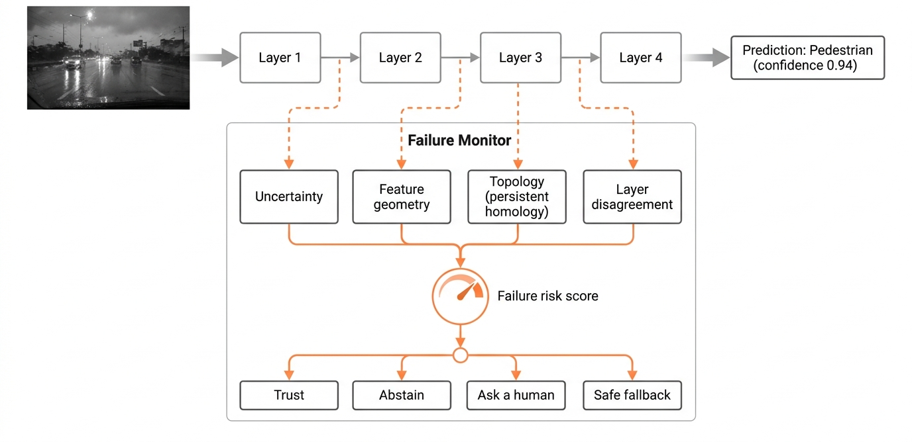
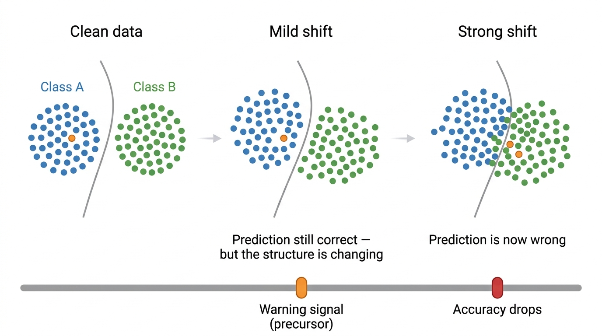

Can We Detect Model Failure Before It Happens?

In one sentence
Can a model warn us that it is about to be wrong — before anyone checks the answer — so the system can slow down, ask a human, or fall back to something safer?
What is the problem?
Picture a self-driving car at night in heavy rain. Its vision model looks at the road and says "pedestrian, 94% confident." Maybe that is right. Maybe the rain and glare have pushed the image into territory the model never saw during training, and the 94% means very little.
A neural network always answers. It has no built-in way of saying "this one is outside what I know." Worse, the confidence number it reports is often high even when it is wrong, so we cannot simply trust that number.
Today, robustness is mostly measured after the fact: researchers collect a test set with blur, noise, fog or adversarial attacks, run the model, and report how much accuracy fell. That tells us how fragile a model is on average. It does not tell us, at the moment a single prediction is made, whether this particular answer should be trusted.
This open problem asks for that missing piece: a failure warning that fires before the mistake is discovered, using only what the model sees at inference time — no correct label needed.
Why does it matter?
A model does not have to be right everywhere if it knows where it is likely to be wrong. A reliable warning turns a silent error into a handled one:
- a car can slow down or hand control back to the driver,
- a medical tool can ask for a second reading instead of giving a confident wrong diagnosis,
- a language model can say "I'm not sure" instead of inventing an answer,
- an operator moving a model to a new hospital, city or season can find out whether it still works there before labeled data arrives.
What would a solution look like?
The idea is to put a second component next to the model — a failure monitor. The model does its normal job. The monitor watches how the model is processing the input, not just the final answer, and turns that into a risk score. The system then decides what to do with the prediction.

Each box in the monitor is a different way of asking "is the model on solid ground here?"
| Signal | The question it asks |
|---|---|
| Uncertainty | If I ask several slightly different versions of the model, do they agree? |
| Feature geometry | Inside the network, does this input sit near examples the model has seen — or far away, or close to the border between two classes? |
| Topology | Do the groups of similar inputs still have their usual shape, or are they starting to merge, stretch or break apart? |
| Layer disagreement | Would the early layers and the final layer point to different answers? If the network "changes its mind" as it goes deeper, the input may be confusing it. |
The key idea: warning signs before the mistake
This is the part that is easiest to misunderstand, so it is worth slowing down.
Inside a trained network, every input becomes a point in a high-dimensional space (its representation). Inputs of the same class tend to gather into clusters, and the model's decision is basically "which cluster is this point in?"
When the data starts to change — more rain, a new camera, a different hospital — those clusters do not jump instantly. They spread, deform and drift. For a while, a given point can still be on the correct side of the border, so the prediction is still right. But the structure around it is already getting worse. Only later does the point actually cross the border and the prediction become wrong.

If we can measure that middle stage reliably — without knowing the correct label — we have a warning that arrives before the failure. That is what I mean by a failure precursor.
Why is it hard?
- Confidence lies. Modern networks are often over-confident. A high softmax score is a weak signal, especially on data unlike the training set.
- No answers to check against. The situations we care about are exactly the ones where we have no labels, so the monitor has to work blind.
- Failure comes in many forms. Blur, weather, a new sensor, a new class of object, a deliberate attack — each breaks the model differently. A warning tuned to one may miss the others.
- An attacker can target the monitor too. If someone knows how the warning works, they may try to fool the model and the monitor at the same time.
- Too many warnings is also a failure. A monitor that flags everything is useless. The real goal is to keep most predictions and still catch most mistakes.
What has been tried so far
This is not a blank field — many good ideas already cover parts of it:
- Using the model's own confidence, and correcting it so that "90% sure" really means right about 90% of the time (calibration). Simple and fast, but it can stay confidently wrong when the data changes.
- Asking many models (ensembles) or the same model many times with random variations (MC dropout) and checking whether they agree. Works better under change, but costs more computation.
- Letting the model abstain on the inputs it is least sure about, and measuring how errors fall as it skips more (selective prediction).
- Training a separate network to predict when the main one is wrong. Powerful, but it learns from past mistakes and may not recognize new kinds of failure.
- Measuring distance inside the network to tell whether an input looks like the training data. Good at spotting very different inputs, less precise for individual errors.
- Estimating accuracy on a new dataset from unlabeled data alone. Useful for deployment, but depends on assumptions about how the data changed.
Most of these read the signal from the output or from a distance. Fewer look at how the shape of the representation changes as the model approaches failure — which is where I think a lot of the missing information is.
How I would approach it
- Train ordinary image classifiers and test them on data that gets gradually harder — light fog, then heavier fog, and so on.
- At every step, record the accuracy and each candidate warning signal from Figure 1.
- Ask two questions: which signal best picks out the individual wrong predictions, and which signal starts rising earliest as the data gets harder?
- Repeat with a different kind of change, such as an adversarial attack, to see whether the best signal still wins — or whether each kind of failure needs its own warning.
Questions still open
- Is there a warning signal that reliably rises before accuracy falls, not at the same moment?
- Can one monitor handle weather, new sensors, new objects and attacks — or do we need one per type of failure?
- Does the shape (topology) of the representation tell us anything that simple distance does not? (see OP-04)
- How easily can an attacker fool the monitor, and can it be made robust to that?
- How should "early" be measured, so different warning methods can be compared fairly?
- How would this work when data cannot be collected in one place, as in federated learning? (see OP-10, OP-11)
This problem also sits underneath several others on the list: recognizing never-seen situations in autonomous driving (OP-13), spotting unreliable clients in federated learning (OP-11), and LLMs knowing when they are wrong (OP-19).
Work on this together
If you work on uncertainty, representation analysis or topological data analysis — or you have a system where mistakes are expensive and the correct answers arrive late — I would love to hear from you. Disagreeing with how I framed the problem is just as welcome.
Reach out about OP-01Further reading
- Hendrycks & Gimpel — A Baseline for Detecting Misclassified and Out-of-Distribution Examples in Neural Networks (ICLR 2017)
- Guo et al. — On Calibration of Modern Neural Networks (ICML 2017)
- Gal & Ghahramani — Dropout as a Bayesian Approximation (ICML 2016)
- Lakshminarayanan et al. — Simple and Scalable Predictive Uncertainty Estimation using Deep Ensembles (NeurIPS 2017)
- Geifman & El-Yaniv — Selective Classification for Deep Neural Networks (NeurIPS 2017)
- Corbière et al. — Addressing Failure Prediction by Learning Model Confidence (NeurIPS 2019)
- Lee et al. — A Simple Unified Framework for Detecting Out-of-Distribution Samples and Adversarial Attacks (NeurIPS 2018)
- Garg et al. — Leveraging Unlabeled Data to Predict Out-of-Distribution Performance (ICLR 2022)